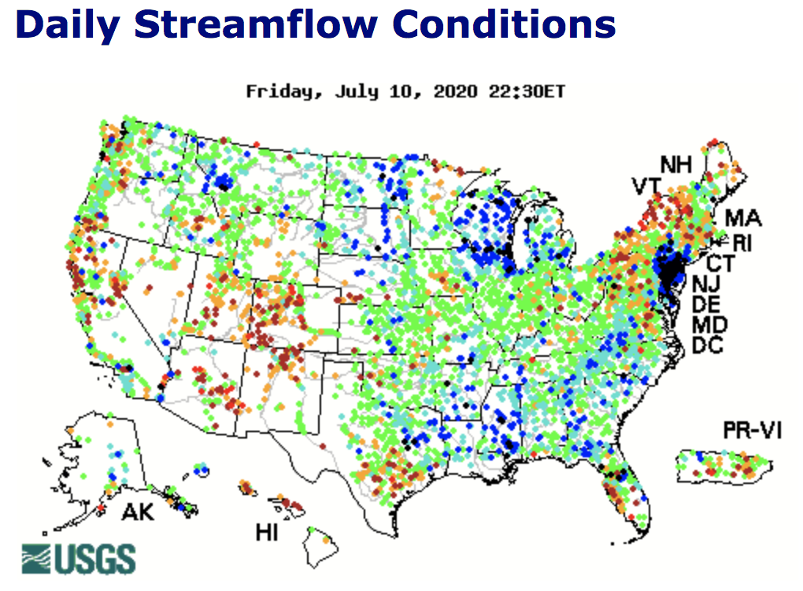
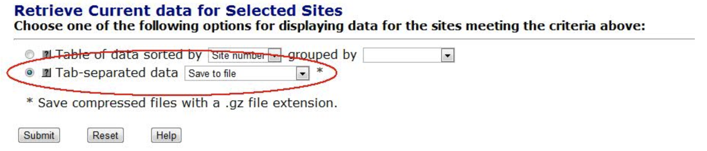

USGS Data Retrieval

It took me a few times to get this right - the interface of the USGS website is a rabbit hole of buttons and options for data retrieval. It’s not so hard to get the data you’re interested in, but pay close attention because it’s easy to do the wrong thing. Probably the easiest way is to use the dataRetrieval package. The last commits on their github are from 2 months ago, so it’s pretty up-to-date.
To use this package, you need to know a few things about the structure of the data. Each USGS streamflow station has a number - you’ll need to know the number for the station you want. There’s also a number associated with each measured value; 00060 for discharge in feet per second, 00065 for gauge height in feet, 00010 for temperature in degrees celcius, and many more. The last critical thing to know is the date range of the data you’re interested in.
- Station Number
- Parameter Code
- Date Range of Interest
Here’s an example from the documentation:
#install.packages("dataRetrieval") #uncomment to install the package
library(dataRetrieval)
# Choptank River near Greensboro, MD:
siteNumber <- "01491000"
parameterCd <- "00060" # Discharge
startDate <- "2009-10-01"
endDate <- "2012-09-30"
discharge <- readNWISdv(siteNumber,
parameterCd, startDate, endDate)Here’s what the resulting data frame looks like:
The fifth column is a quality code - A stands for approved for release by the USGS.
Another notable argument to the readNWISdv function is statCd. This allows you to request daily data and specify the statistic used. For example, you can request the daily maximum, mean, median, or total.
Pretty simple, right?
There are some other handy functions and options in this library. You’ll notice that the colunm names aren’t really descriptive of the data. You can use another function from the package to rename them. Try this:
discharge <- renameNWISColumns(discharge)
names(discharge)## [1] "agency_cd" "site_no" "Date" "Flow" "Flow_cd"That can clean things up a lot - especially if you’re importing many parameters.
library(ggplot2)
ggplot(discharge, aes(x=Date, y=Flow)) + geom_point(alpha = 0.4)
What I am interested is the streamflow data, so this is as far as I need to go. You can also import different kinds of USGS data using other functions of the same package. It’s a treasure trove! Check out the documentation to get the full scope of its powers.
I also came across another package called waterData that can do the same retrieval and maybe some more analysis on the data. I haven’t looked further into this, but the last commits to their github are from 3 years ago, so I choose the dataRetrieval package.
Now I’ll let you in on the less fun bit, which is the way I originally tried to download the data locally then upload to R. I started out fumbling around the website trying to find the gauge closests to the site I’m interested in. There’s an interactive map on the homepage; you click on a state to get to a more refined map and click around some more to find the gauge you want.

You get to a really promising page that gives you some options to select parameters, a date range, and whether you want the output to be a graph, table, or tab-seperated format. This looks good, but is not.
I chose the tab-seperated option; After a lengthy wait a new tab with the output opened in the browser - so no file download. I guess I could have copied and pasted all of that into a text file, but I decided to search for a way to actually download the file.
I found a USGS primer on dowloading data (always read the instructions first!), which took some differnet turns than the path I took previoulsy. The user interface is difficult to navigate and not intuitive, but it’s a great resource for data. I won’t go through the whole process, because it’s mostly just clicking on the right spot and choosing your desired options, but here is the most important part:
 There are still extra steps of choosing the options in the website, downloading the data, then reading it into R. This is the code I used to read the data once I had downloaded it as a text file and renamed it “streamflow”. If I were to go back, I would not do it this way, but I guess it doesn’t require downloading a new package and is fine if you’re not dowloading a lot of data.
library(tidyverse)
streamflow <- read.table("streamflow", skip = 32) #the first 32 lines are metadata
colnames(streamflow) <- c("agency", "site_no", "date", "time", "timezone", "Flow", "quality_code")
#discharge is in cubic feet per second, quality code A means approved
streamflow$date <- as.Date(streamflow$date)
ggplot(streamflow, aes(x=date, y=Flow)) + geom_point(alpha=0.4)
Hope this info helps you avoid wasting time like I did on my first try! Do you know of a better way to get the data into R? Did you encounter any pitfalls?
Liz McConnell
Graduate Student, CSU Center for Contaminant Hydrology
My research interests include contaminant fate and transport, data analysis using statistics and machine learning, R programming, and geospatial analysis.